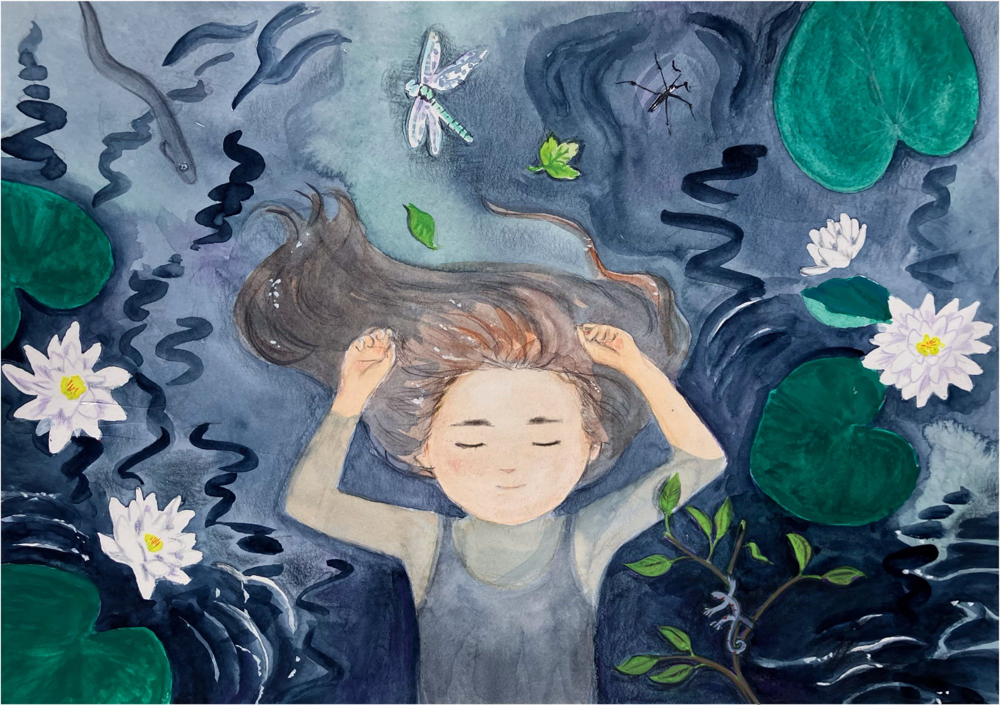
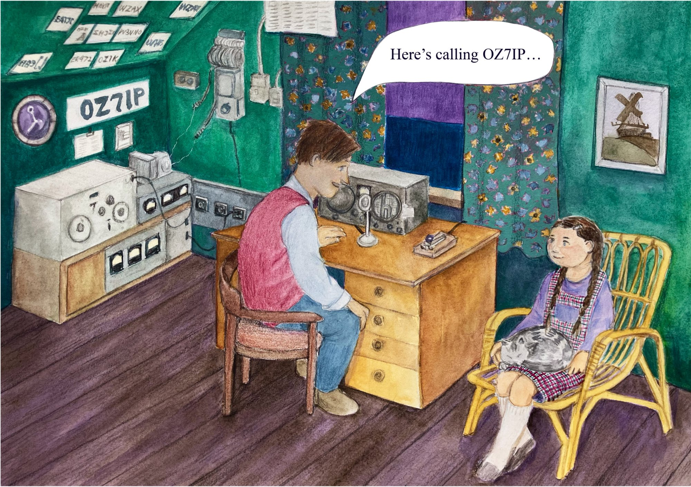
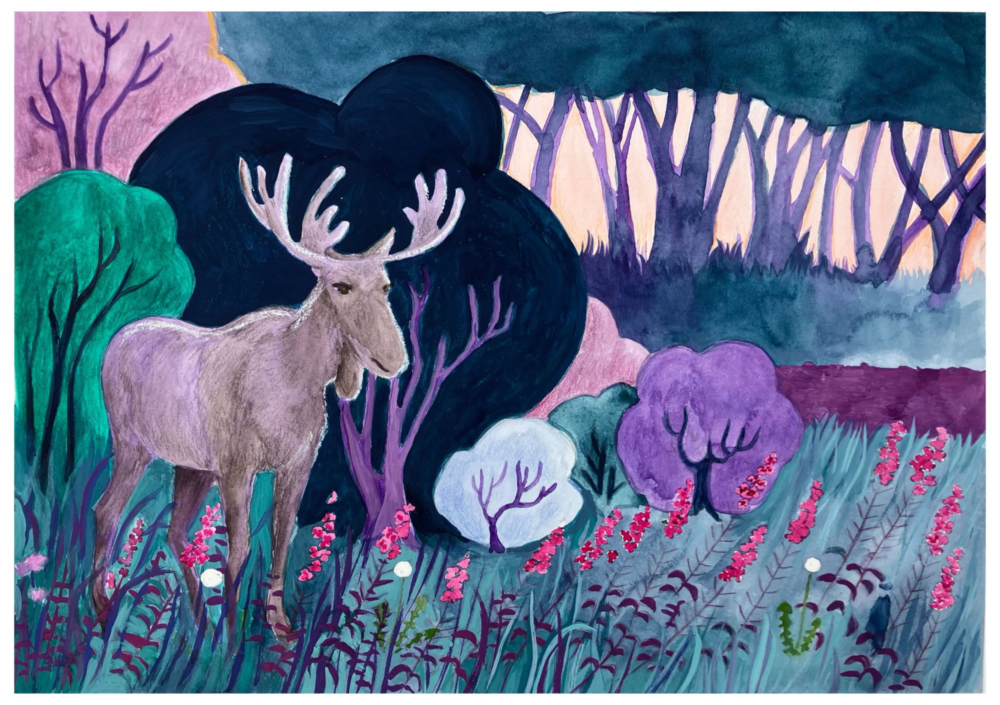
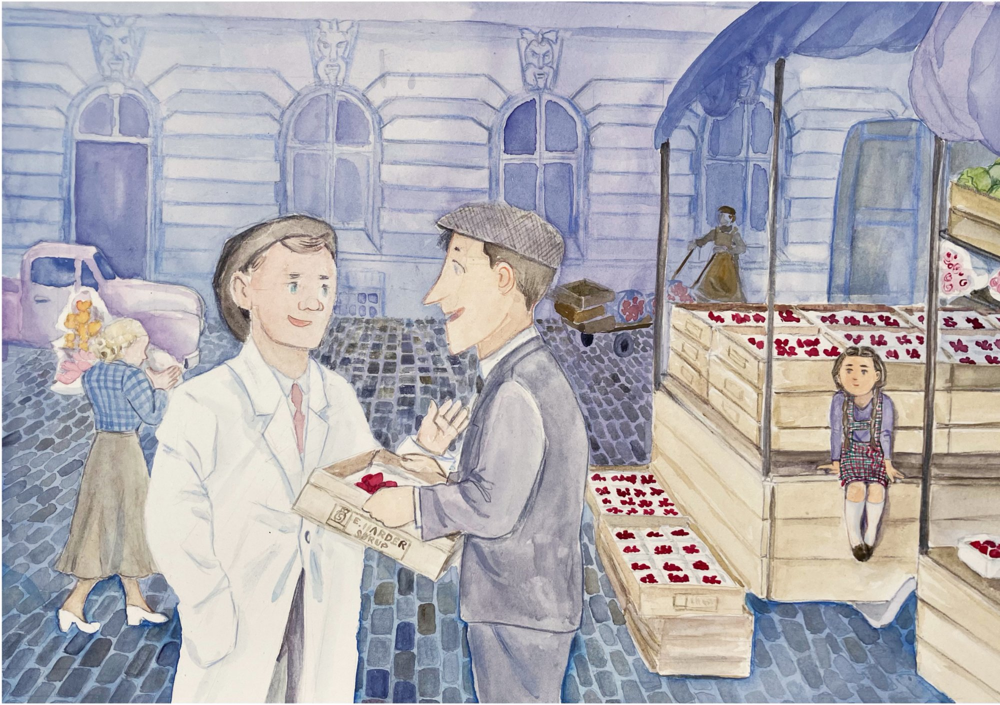

Jordbærkongens datter
Jordbærkongens datter er en håndtegnet billedbog for børn fra 4 til 8 år. Den fortæller historien om en lille pige, der vokser op på landet i midten af det 20. århundrede — i en tid, hvor Danmark var et helt andet sted end i dag.
Bogen er tegnet med akvarel og farveblyanter og har en varm, drømmende stemning. Illustrationerne er rige på detaljer fra hverdagslivet: grønttorve, skovstier, radioamatører og vidtstrakte vinterlandskaber.

Et Danmark, som de færreste husker
Bogen foregår i en tid, der er ved at glide ud af den kollektive hukommelse — tiden inden fjernsynet, supermarkedet og velstandssamfundet. Et Danmark af tørveduft, håndpumpede brønde og snedækkede gårde.
Naturen fylder meget i bogens univers: søernes stilhed, skovens dyr, markernes rytme og årstidernes skift. Det er en verden, der var tæt forbundet med naturens cyklus på en måde, som mange børn i dag sjældent oplever.
Spredt ind imellem hverdagsscenerne gemmer sig historiske øjebliksbilleder — knappe og stille vidnesbyrd om de store begivenheder, som familien levede tæt ved, men som barnet endnu ikke forstår fuldt ud.
At holde fast i det, der forsvinder
Bogen opstod efter en samtale med forfatterens mor, der er i 80'erne. Hun er en af de sidste, der husker livet, som det var — hendes søskende og nærmeste familie er borte og lever nu kun i hendes erindring.
Da det gik op for forfatteren, at disse erindringer ville forsvinde med hende, opstod et brændende ønske om at bevare dem. Ikke som et historisk dokument, men som en fortælling — levende, sanselig og tilgængelig for børn og voksne.
Arbejdet med bogen har vist sig at give meget mere end blot et produkt. Det har skabt samtaler på tværs af generationer, knyttet familien tættere sammen og givet plads til spørgsmål om, hvem vi er, og hvad vi bærer videre.
Der er en tydelig rød tråd fra det landliv, forfatterens mor levede som barn, og det liv, familien lever i dag — en særlig tilknytning til naturen og til det med at se ting gro. Det er den tråd, bogen forsøger at synliggøre.
En drøm fra ungdomsårene
Illustratoren drømte om at lave en børnebog allerede under studierne i England, men livet kom imellem — uddannelse, familie, arbejde. I tredive år lå tegnegrejet i skuffen.
En stressdiagnose ændrede det. Pludselig var der tid til at gøre ting langsomt og med nærvær. Tegning som terapi. Og med familiens opbakning tog projektet form.
Alle illustrationerne er tegnet analogt — blyant, akvarel og farveblyanter — og hvert billede afspejler den omhu og tålmodighed, som projektet er blevet til i.

Et kig indenfor

